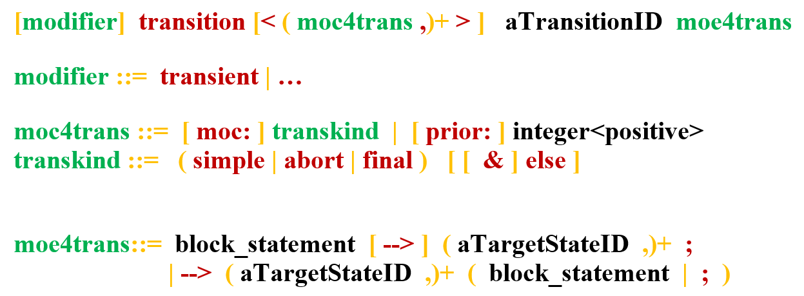
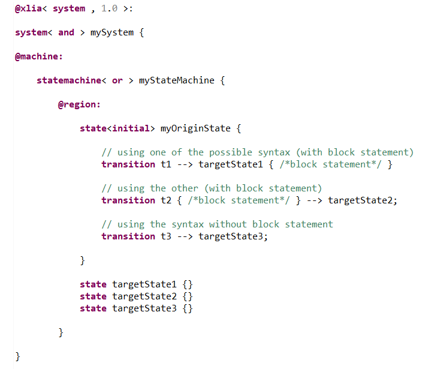
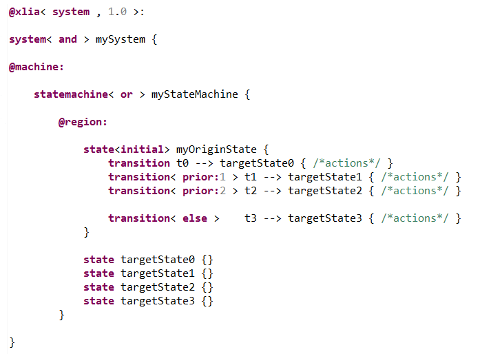

Transitions describe operational behaviors in peculiar machines, called symbolic state-transition machines.
Transitions are to be defined and declared within a parent "state". Remarks:
To declare a given transition, we use the following general syntax (see BNF syntax) :
In the following, we'll be explaining the different modifiers and arguments that make up this syntax.
This gather the most important and commonly used pieces of information to define a transition.
In this part, we can add "block statements" that will be checked and/or executed when the transition is in course. It is also in this part that we can specify the target state of the transition.
If we define a transition without a block statement, this transition is not checked (therefore it can be taken at any given time without conditions) and has no other effects that changing the state of the parent machine (however, effects can be triggered by the "@disable{...}" action primitive of the exited state and the "@enable{...}" action primitive of the entered state).
There are different possible syntaxes as shown below :
Block statements inside transitions have some specificities. You can find out about this here.
The specificity of a "transient" transition is that its evaluation is followed by the evaluation of its target state, whatever state it is, stable or not.
By default, and as usual, a transition type is "simple".
This attribute flag can only be used on transitions belonging to a composite state.
A transition with the abort attribute is called an "abortion transition". In the parent composite state, the evaluation of the abortion transition has priority over the evaluation of the substate's transitions.
Moreover, its evaluation will trigger the "@abort{...}" primitive of the composite state instead of the "@disable{...}" primitive.
Please refer to the "@abort{...}" primitive for further information and examples.
It indicates finalization transitions. Their evaluation starts when their source state, which is necessarily composite, has all its "final states" activated (see "@final{...}" primitive).
It indicates the transition(s) with the lowest priority in a given state. It is used when one wants to give a deterministic evaluation of a state's output transitions, using logical constraints or explicit priorities (see following section).
The expression "transition<else>" is an alias for "transition<simple & else>".
It is worth noticing that The Simple Robot Pet example makes use of an "else" transition.
Priorities schedule transitions of the same kind (simple, abort, final, etc.) and coming from the same source state. Usually, the highest priority is 0, and the transition with the lowest priority will be assigned the highest number of all transitions. Two transitions with the same priority will be evaluated in a non-deterministic way.
For instance, in the following example the priority order is t0 (because default priority is 0), then t1, then t2, then t3 :
You can test this example by commenting the different transitions and verifying which one is executed by the engine. From left to right, results of "Exploration" when commenting :